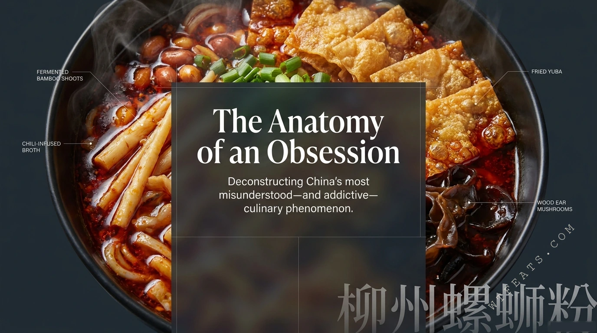
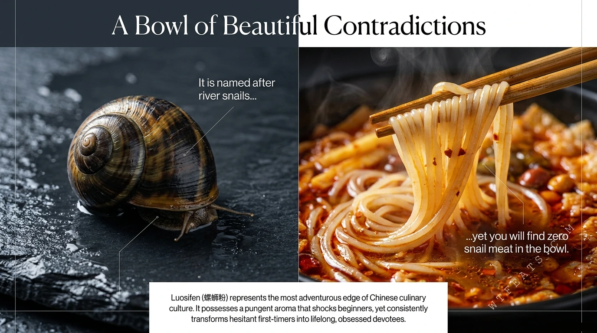

You eat river snails.
The name says snail noodles, so there must be a pile of snail meat in there somewhere.
No. 004 / Misunderstood Chinese Food
Luosifen is Liuzhou's river-snail noodle soup: a 10-hour snail broth, chewy rice noodles, chili oil, and the infamous fermented bamboo shoots. The twist? There is zero snail meat in the bowl — and the smell is not the snails.

River snails are simmered for the broth, then discarded. Their job is umami, not chewing.
Born in Liuzhou night markets in the late 1970s; National Geographical Indication in 2018, Intangible Cultural Heritage in 2021.
A 10-hour broth, 14–30 day fermented bamboo, and a five-dimensional flavor profile. The premium packs merely keep up.
What Is It?
Luosifen (螺蛳粉) starts with fresh river snails simmered with pork and chicken bones, star anise, cinnamon, and regional herbs for over ten hours. Once the snails surrender their umami to the liquid, the meat is discarded — their culinary purpose entirely fulfilled. Into that broth go soft, chewy, multi-processed rice noodles.
The legendary, room-clearing scent? It does not come from the snails at all. It originates entirely from one ingredient: artisanal pickled bamboo shoots, fermented for weeks. To its detractors it smells like a mistake; to its fans it is the undeniable soul of the bowl.
Beautiful Contradictions
It is named after river snails, yet you will find zero snail meat in the bowl. It possesses a pungent aroma that shocks beginners, yet consistently transforms hesitant first-timers into lifelong, obsessed devotees. That is the most adventurous edge of Chinese culinary culture — and it is entirely deliberate.

Myth vs Reality
The name says snail noodles, so there must be a pile of snail meat in there somewhere.
They are solely a foundational flavor base; the meat is discarded after boiling.
That funk must be rotting seafood. Blame the snails.
The signature scent comes entirely from fermented bamboo shoots — the broth itself is fresh.

Visual Story
Follow the assembly: multi-processed rice noodles, the 10-hour snail broth, 14–30 day fermented bamboo, fiery chili oil, and the final verdict.
Open the timelineDeep Dive
Tyrosine to p-cresol, glutamate-nucleotide synergy, and why odor and umami are biological twins.
Read the articleGuide
A tidy table of contents for the overview, the build, the science, and how to eat it.
Browse chaptersHow to Eat It
Eat it like a local: stir the chili oil deeply into the broth before the first bite, and eat it piping hot — heat volatilizes the aromas and maximizes the umami.
Modern packaging technology has produced instant versions so stable that top Chinese food critics rate them equal to fresh street stalls. Your kitchen counts.
Build it up: extra fried yuba to sponge the broth, roasted peanuts, wood ear mushrooms, pickled long beans. One rule — never ask to remove the bamboo shoots.